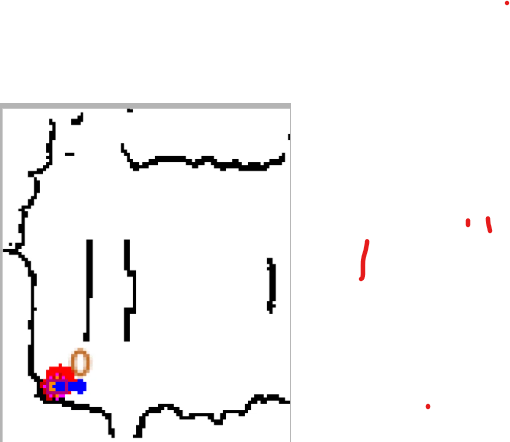
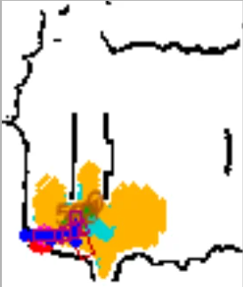
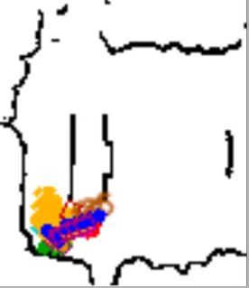
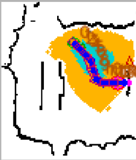

系統要解決的問題
機器人不能只知道「目標在哪」，還需要能建圖、定位、規劃可行路徑、處理感知誤差，並在接近目標後轉成精細操作。
ROS2 / Autonomous Navigation / Manipulation
以 ROS 2 Humble 為核心，整合 SLAM / AMCL / Nav2、YOLO RGB-D 感知、自訂 Hybrid A*、近距離視覺伺服與機械手臂 IK，使機器人能依任務狀態自主切換搜尋、規劃、導航、抓取、過橋與開門等行為。
 Unity / Robot Demo 畫面
Unity / Robot Demo 畫面
Page Outline
這頁會依照 PROS 的實作順序介紹：先說明專題定位與個人擴充範圍，再看系統架構、三個子模組如何串接，接著說明 SLAM / AMCL / YOLO RGB-D / TaskController / Hybrid A* / Visual Servo / Arm IK 如何形成完整任務流程。
Project Story
PROS 的重點不是單獨展示 YOLO、SLAM 或手臂，而是讓機器人能根據任務狀態，在「搜尋、地圖導航、近距離視覺對準、抓取、過橋、開門」之間自主切換。系統以 ROS 2 topic、TF、action、service 串接多個子系統，使感測資料能一路轉成導航目標、規劃路徑、車體命令與手臂動作。
本作品基於老師提供的三個 ROS 2 base modules 進行修改、整合與擴充。我的呈現重點是任務狀態機、ROS topic 串接、YOLO RGB-D 資料使用、Hybrid / Grid A* 規劃、近距離視覺伺服、手臂控制流程與 demo pipeline。YOLO 任務資料由我自行標註並訓練，再整合進 ROS 2 感知流程。
機器人不能只知道「目標在哪」，還需要能建圖、定位、規劃可行路徑、處理感知誤差，並在接近目標後轉成精細操作。
把 YOLO / RGB-D 輸出接到 TaskController、A* 規劃器、車體控制與手臂 IK，使任務流程能從遠距離導航延伸到近距離操作。
Task 1 抓熊回家、Task 2 上橋下橋、Task 3 開門推門，三者共用同一套感知、定位、規劃與狀態機架構。
System Architecture
系統從 LiDAR、RGB-D Camera、IMU 與 Odometry 取得環境資訊，透過 SLAM Toolbox 建立 occupancy map，再用 AMCL / Nav2 在地圖中定位與導航。YOLO 模組負責 detection / segmentation，並結合 depth 與 TF 輸出目標 map 座標或橋面入口。最後由 TaskController 根據任務狀態、地圖、pose、YOLO topic、depth 與 timeout 決定要探索、規劃、導航、視覺伺服或執行手臂動作。
提供 /scan、RGB image、depth image、姿態與里程計資料。
由 LiDAR、odom 與 TF 建立 occupancy grid map，並透過 map saver 儲存。
載入地圖後估計 robot pose，建立 costmap 並支援導航。
辨識 bear、bridge、door knob，輸出 target info、depth、marker 與 map position。
非阻塞狀態機，根據任務與感測資料切換搜尋、規劃、接近、抓取、開門。
輸出車體控制、手臂關節角、gripper 動作與 task transition。
Module Responsibilities
PROS 的實作不是單一 repo 裡的單一程式，而是由三個修改後的 ROS 2 模組組成。pros_app 負責啟動與導航基礎設施，ros2_yolo_integration 負責把 RGB-D 影像轉成任務可用的感知資料，pros_car 則負責高階任務狀態機、規劃、車體與手臂控制。
負責 Docker Compose、SLAM、地圖儲存、localization、Nav2、rosbridge 與 Foxglove 監看環境。
接收 RGB-D 影像，執行 YOLO detection / segmentation，輸出 target status、depth、marker、map position 與 bridge info。
整合 map、pose、scan、YOLO topics 與 arm state，啟動 TaskController、A* planner、car controller 與 arm controller。
Execution Pipeline
正式任務前，系統先用 LiDAR、odom 與 TF 建立 occupancy map 並儲存。任務執行時，AMCL 提供 robot pose，YOLO RGB-D 提供目標位置或橋面資訊；TaskController 先用地圖規劃將機器人帶到目標附近，接近後再停止 map-based navigation，改用 YOLO 的水平偏移與 depth 進行 visual servoing，最後交給手臂 IK 或門把操作流程。
LiDAR 發布 /scan，SLAM Toolbox 接收 scan、odom 與 TF，建立解析度 0.05 m 的 occupancy grid，並由 map saver 儲存 PGM / YAML。
Map Server 載入已儲存地圖，AMCL 融合 /scan 與 /odom 輸出 /amcl_pose，Nav2 costmap 用於安全導航。
YOLO 接收 RGB 與 depth，依任務切換 detection 或 segmentation，輸出目標距離、水平偏移、marker 與 map-frame position。
TaskController 以約 10 Hz tick，根據 state、pose、map、YOLO、depth、scan 與 timeout 產生下一步行動。
遠距離使用 Hybrid A*，失敗時 fallback 至 Grid A*；執行期間可監測障礙與 no-progress 狀況。
接近後以 YOLO delta_x + depth 對準，目標轉到 arm_ik_base 後執行 2D IK、pre-grab、grab、lift 或 door press。
Task State Machine
TaskController 採用非阻塞狀態機。每次 tick 都會讀取最新 ROS topics、YOLO 資訊、AMCL pose、地圖、timeout 與任務條件，回傳車體或手臂動作。這讓系統不會卡在單一 blocking function，執行中仍能處理 target lost、depth outlier、規劃失敗、手臂不可達與 return-home timeout。
Task 1
Record Home → Set bear target → Explore / Search → Hybrid A* 到目標附近 → YOLO 視覺接近 → IK 抓取 → Return Home → Release。
Task 2
Plan to staging → 校正 yaw → segmentation 找橋面入口 → 對正上橋 → 下橋。完整流程設計包含橋上抓熊回收。
Task 3
Plan to door staging → 校正 yaw → YOLO knob 對準 → 手臂 pre-press → 接觸門把 → 下壓 → 車體右前方推門。
找不到目標時，使用 Frontier exploration 或旋轉搜尋，並持續監看 YOLO detection status。
取得穩定 map-frame target 後，優先 Hybrid A*，失敗時切換 Grid A* 或重新搜尋。
接近目標後切換為 YOLO delta_x 與 depth 視覺伺服，等待多次穩定觀測。
手臂抓取或按門把前檢查可達性；失敗時清除 stale target、回 vision pose 並重新搜尋。
Planning & Visual Servo
Hybrid A* 的搜尋狀態包含 (x, y, yaw bin)，因此能同時考量位置與朝向；每個候選狀態都會做矩形 footprint collision check，並使用 clearance cost 遠離障礙。若 Hybrid A* 失敗，系統會 fallback 到 Grid A*。抵達目標附近後，地圖座標不再足夠精準，系統改用 YOLO 的水平偏移與 depth 做短脈衝旋轉與前進，形成局部視覺伺服。




不把車視為單點，而是檢查矩形 footprint，適合窄道、門前 staging 與橋前對位。
Hybrid A* 失敗時切到 Grid A*，避免一次規劃失敗就中斷任務。
接近目標後使用 YOLO delta_x 與 depth 微調，補足地圖定位與相機外參誤差。
抓取前同時檢查 pre-grab、grab、lift 三個姿態可達性，降低盲抓失敗風險。
Technical Highlights & Limits
這個專題合理呈現的是 ROS 2 系統整合、任務策略、狀態機、規劃與感知資料串接；不直接宣稱特定 YOLO mAP 或實體任務成功率，因為目前缺少正式多次端到端實驗統計。
部分任務依賴 staging pose、時間與場地校正；尚缺少正式端到端成功率、YOLO FPS 與規劃時間統計。
補多次實驗表格、統一啟動流程、改善動態障礙重規劃、量測 Hybrid A* / Grid A* 規劃時間與路徑長度。
Demo 影片、occupancy map、Hybrid A* 成功圖、規劃 debug map、任務文件與 code map。
Demo Video